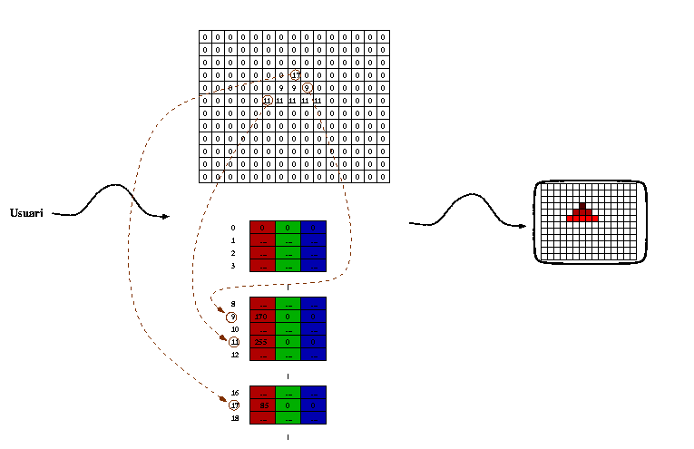

Tanmateix aquesta arquitectura resulta a vegades massa cara per a una aplicació determinada i es recorre a una paleta de colors (en anglés color lookup table i per tant sovint referida per l'acrònim CLT). En aquest cas el frame buffer no emmagatzema directament intensitats de color, sino un índex a una taula que descriu les intensitats de cada color per a tots els pixels que tinguin aquell valor. Per tant, el nombre de colors diferents presentables pot ser molt elevat, pero en un moment donat només hi poden haver un cert nombre de colors diferents alhora, on el límit vindrà donat pel tamany de la paleta de colors (que coincideix amb el nombre de valors diferents que poden emmagatzemar-se en cada pixel del frame buffer. El valor més típic es 256 colors diferents d'entre 16.777.216 colors diferents (quan cada pixel disposa d'un byte per a emmagatzemar el seu color, i cada entrada en la paleta de colors disposa de tres bytes per a emmagatzemar les intensitats de vermell, verd i blau). La següent figura mostra esquemàticament aquesta arquitectura (que també podria presentar-se en la seva variant de doble buffer):
|  |
Observeu que a l'exemple moltes entrades contenen una el·lipsi
perquè el seu valor és irrellevant a l'exemple. A més les components
de blau i verd són zero a les entrades rellevants, ja que el triangle
és de tons de vermell. Observeu també que no hi ha cap relació entre
l'ordre a la taula i els colors. Vegeu també l'estalvi substancial que
suposa aquest esquema en memòria (tal vegada que el nombre
d'entrades a la paleta de colors és sensiblement inferior al nombre de
pixels de la pantalla.